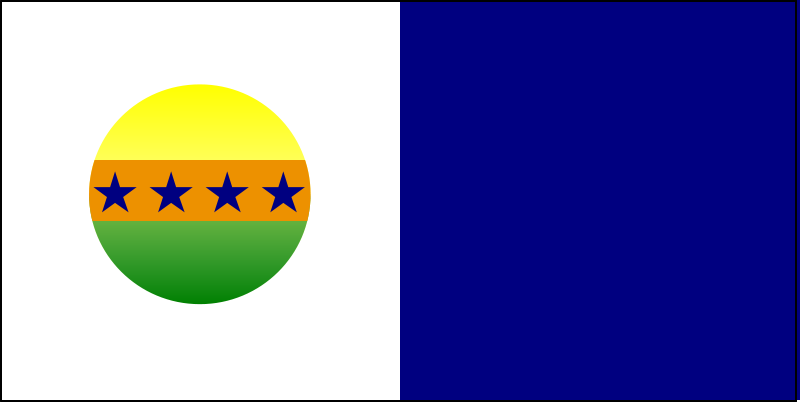
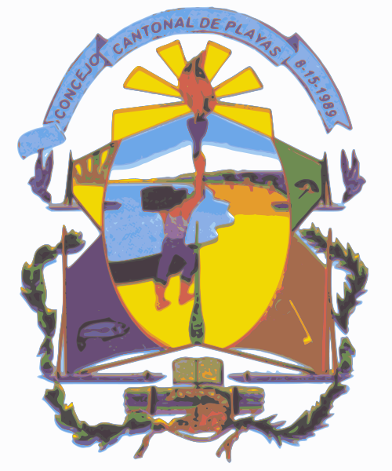

 Descripción de la Bandera
 Descripción del Escudo
CORO ¡ Un fulgor desde el cielo saluda a este pueblo de mar y de arena! ¡Orgullosos tus hijos celebran esta gloria de triunfo por Ti! I A nuestras Playas muy solitaria en sus balsillas de pescadores fueron llegando por el océano, nuestros primeros pobladores. II Aquel recinto Playas de El Morro, con su vía marítima atractiva, con sus turistas guayaquileños, tomó en el nombre del héroe Villamil. III Pueblo anhelante por superarse, sus hijos vencen la oposición, que derrotadas pasa a esfumarse el quince de Agosto. ¡Playas, Cantón! IV Playas avanza con buen futuro, con sus valores de riqueza; lucha ferviente siempre seguro con gran civismo y con nobleza V Con todo somos del Guayas linda provincia huancavilqueña, por eso siempre en este Playas nuestro Ecuador trabaja y sueña. Letra: Eladio Criollo MiteMúsica: Luis Padilla